import pandas as pd
import numpy as np20 Exploration of the Feed Grains Database
The purpose of this chapter is to get our hands dirty with the Feed Grains database maintained by the USDA ERS.
We use this data to reproduce several of the graphs in from Mindy Mallory’s book Price Analysis - in particular from Chapters 12 (Forecasting Production), 13 (Forecasting Use of Corn), and 15 (Ending Stocks and Price).
The focus of this analysis is on corn.
20.1 Import Pacakges
Let’s begin by loading the packages that we will need.
20.2 Read-In Data
Next, let’s read-in our data.
df_feed_grains = pd.read_csv('../data/FeedGrains.csv')
df_feed_grains| SC_Group_ID | SC_Group_Desc | SC_GroupCommod_ID | SC_GroupCommod_Desc | SC_Geography_ID | SortOrder | SC_GeographyIndented_Desc | SC_Commodity_ID | SC_Commodity_Desc | SC_Attribute_ID | SC_Attribute_Desc | SC_Unit_ID | SC_Unit_Desc | Year_ID | SC_Frequency_ID | SC_Frequency_Desc | Timeperiod_ID | Timeperiod_Desc | Amount | |
|---|---|---|---|---|---|---|---|---|---|---|---|---|---|---|---|---|---|---|---|
| 0 | 2 | Supply and use | 9.0 | Barley | 1 | 0.80 | United States | 1 | Barley | 1 | Planted acreage | 2 | Million acres | 1926 | 3 | Annual | 69 | Commodity Market Year | 8.796000 |
| 1 | 2 | Supply and use | 9.0 | Barley | 1 | 0.80 | United States | 1 | Barley | 1 | Planted acreage | 2 | Million acres | 1927 | 3 | Annual | 69 | Commodity Market Year | 9.513000 |
| 2 | 2 | Supply and use | 9.0 | Barley | 1 | 0.80 | United States | 1 | Barley | 1 | Planted acreage | 2 | Million acres | 1928 | 3 | Annual | 69 | Commodity Market Year | 12.828000 |
| 3 | 2 | Supply and use | 9.0 | Barley | 1 | 0.80 | United States | 1 | Barley | 1 | Planted acreage | 2 | Million acres | 1929 | 3 | Annual | 69 | Commodity Market Year | 14.703000 |
| 4 | 2 | Supply and use | 9.0 | Barley | 1 | 0.80 | United States | 1 | Barley | 1 | Planted acreage | 2 | Million acres | 1930 | 3 | Annual | 69 | Commodity Market Year | 13.581000 |
| ... | ... | ... | ... | ... | ... | ... | ... | ... | ... | ... | ... | ... | ... | ... | ... | ... | ... | ... | ... |
| 496558 | 3 | Exports and imports | 17.0 | Oats | 300 | 1.02 | Caribbean Basin (CBERA) | 79 | Oats products | 24 | Exports, from U.S. to specified destination | 7 | 1,000 metric tons | 2022 | 1 | Monthly | 12 | Dec | 0.063158 |
| 496559 | 3 | Exports and imports | 17.0 | Oats | 300 | 1.02 | Caribbean Basin (CBERA) | 79 | Oats products | 24 | Exports, from U.S. to specified destination | 7 | 1,000 metric tons | 2022 | 3 | Annual | 19 | MY Jun-May | 0.442165 |
| 496560 | 3 | Exports and imports | 17.0 | Oats | 300 | 1.02 | Caribbean Basin (CBERA) | 79 | Oats products | 24 | Exports, from U.S. to specified destination | 7 | 1,000 metric tons | 2023 | 1 | Monthly | 1 | Jan | 0.051325 |
| 496561 | 3 | Exports and imports | 17.0 | Oats | 300 | 1.02 | Caribbean Basin (CBERA) | 79 | Oats products | 24 | Exports, from U.S. to specified destination | 7 | 1,000 metric tons | 2023 | 1 | Monthly | 2 | Feb | 0.036997 |
| 496562 | 3 | Exports and imports | 17.0 | Oats | 300 | 1.02 | Caribbean Basin (CBERA) | 79 | Oats products | 24 | Exports, from U.S. to specified destination | 7 | 1,000 metric tons | 2023 | 1 | Monthly | 3 | Mar | 0.022716 |
496563 rows × 19 columns
20.3 Production
Let’s grab all the attributes that are related to production side of the WASDE balance sheet analysis. We have to do this in two separate parts because the Timeperiod_Desc is different for some of the attributes.
attributes = ['Harvested acreage', 'Yield per harvested acre', 'Planted acreage',
'Prices received by farmers', 'Production', 'Imports', 'Total Supply']
df_tidy_corn = \
(
df_feed_grains
.query('SC_Commodity_Desc == "Corn"')
.query('SC_GeographyIndented_Desc == "United States"')
.query('SC_Attribute_Desc == @attributes')
.query('Timeperiod_Desc == "Commodity Market Year"')
[['SC_Commodity_Desc', 'SC_GeographyIndented_Desc', 'SC_Attribute_Desc', 'Timeperiod_Desc','Year_ID', 'Amount', 'SC_Unit_Desc']]
)
df_tidy_corn| SC_Commodity_Desc | SC_GeographyIndented_Desc | SC_Attribute_Desc | Timeperiod_Desc | Year_ID | Amount | SC_Unit_Desc | |
|---|---|---|---|---|---|---|---|
| 13840 | Corn | United States | Harvested acreage | Commodity Market Year | 1866 | 30.017 | Million acres |
| 13841 | Corn | United States | Harvested acreage | Commodity Market Year | 1867 | 32.116 | Million acres |
| 13842 | Corn | United States | Harvested acreage | Commodity Market Year | 1868 | 35.116 | Million acres |
| 13843 | Corn | United States | Harvested acreage | Commodity Market Year | 1869 | 35.833 | Million acres |
| 13844 | Corn | United States | Harvested acreage | Commodity Market Year | 1870 | 38.388 | Million acres |
| ... | ... | ... | ... | ... | ... | ... | ... |
| 15962 | Corn | United States | Prices received by farmers | Commodity Market Year | 2019 | 3.560 | Dollars per bushel |
| 15979 | Corn | United States | Prices received by farmers | Commodity Market Year | 2020 | 4.530 | Dollars per bushel |
| 15996 | Corn | United States | Prices received by farmers | Commodity Market Year | 2021 | 6.000 | Dollars per bushel |
| 16007 | Corn | United States | Prices received by farmers | Commodity Market Year | 2022 | 6.600 | Dollars per bushel |
| 16014 | Corn | United States | Prices received by farmers | Commodity Market Year | 2023 | 4.800 | Dollars per bushel |
730 rows × 7 columns
attributes = ['Imports, market year', 'Beginning stocks']
df_imports_stocks = \
(
df_feed_grains
.query('SC_Commodity_Desc == "Corn"')
.query('SC_GeographyIndented_Desc == "United States"')
.query('SC_Attribute_Desc == @attributes')
.query('Timeperiod_Desc.str.contains("MY")')
[['SC_Commodity_Desc', 'SC_GeographyIndented_Desc', 'SC_Attribute_Desc', 'Timeperiod_Desc','Year_ID', 'Amount', 'SC_Unit_Desc']]
)
df_tidy_corn = pd.concat([df_tidy_corn, df_imports_stocks])
df_tidy_corn| SC_Commodity_Desc | SC_GeographyIndented_Desc | SC_Attribute_Desc | Timeperiod_Desc | Year_ID | Amount | SC_Unit_Desc | |
|---|---|---|---|---|---|---|---|
| 13840 | Corn | United States | Harvested acreage | Commodity Market Year | 1866 | 30.017 | Million acres |
| 13841 | Corn | United States | Harvested acreage | Commodity Market Year | 1867 | 32.116 | Million acres |
| 13842 | Corn | United States | Harvested acreage | Commodity Market Year | 1868 | 35.116 | Million acres |
| 13843 | Corn | United States | Harvested acreage | Commodity Market Year | 1869 | 35.833 | Million acres |
| 13844 | Corn | United States | Harvested acreage | Commodity Market Year | 1870 | 38.388 | Million acres |
| ... | ... | ... | ... | ... | ... | ... | ... |
| 16416 | Corn | United States | Imports, market year | MY Sep-Aug | 2019 | 41.885 | Million bushels |
| 16421 | Corn | United States | Imports, market year | MY Sep-Aug | 2020 | 24.233 | Million bushels |
| 16516 | Corn | United States | Imports, market year | MY Sep-Aug | 2021 | 24.227 | Million bushels |
| 16519 | Corn | United States | Imports, market year | MY Sep-Aug | 2022 | 40.000 | Million bushels |
| 16520 | Corn | United States | Imports, market year | MY Sep-Aug | 2023 | 25.000 | Million bushels |
828 rows × 7 columns
Our analysis will be easier if we pivot our tidy data.
df_supply = \
(
df_tidy_corn
.pivot(index='Year_ID', columns='SC_Attribute_Desc', values='Amount')
.reset_index()
[['Year_ID', 'Beginning stocks','Planted acreage', 'Harvested acreage', 'Yield per harvested acre',
'Production', 'Prices received by farmers', 'Imports, market year']]
.assign(total_supply = lambda df: df['Beginning stocks'] + df['Production'] + df['Imports, market year'])
)
df_supply.columns.name = None
df_supply| Year_ID | Beginning stocks | Planted acreage | Harvested acreage | Yield per harvested acre | Production | Prices received by farmers | Imports, market year | total_supply | |
|---|---|---|---|---|---|---|---|---|---|
| 0 | 1866 | NaN | NaN | 30.017 | 24.3000 | 730.814 | 0.657 | NaN | NaN |
| 1 | 1867 | NaN | NaN | 32.116 | 24.7000 | 793.905 | 0.781 | NaN | NaN |
| 2 | 1868 | NaN | NaN | 35.116 | 26.2000 | 919.590 | 0.617 | NaN | NaN |
| 3 | 1869 | NaN | NaN | 35.833 | 21.8000 | 782.084 | 0.725 | NaN | NaN |
| 4 | 1870 | NaN | NaN | 38.388 | 29.3000 | 1124.775 | 0.521 | NaN | NaN |
| ... | ... | ... | ... | ... | ... | ... | ... | ... | ... |
| 153 | 2019 | 2220.749 | 89.745 | 81.337 | 167.5000 | 13619.928 | 3.560 | 41.885 | 15882.562 |
| 154 | 2020 | 1919.462 | 90.652 | 82.313 | 171.4000 | 14111.449 | 4.530 | 24.233 | 16055.144 |
| 155 | 2021 | 1234.512 | 93.252 | 85.318 | 176.7000 | 15073.820 | 6.000 | 24.227 | 16332.559 |
| 156 | 2022 | 1376.890 | 88.579 | 79.207 | 173.3397 | 13729.719 | 6.600 | 40.000 | 15146.609 |
| 157 | 2023 | 1416.609 | 91.996 | 84.100 | 181.5101 | 15265.000 | 4.800 | 25.000 | 16706.609 |
158 rows × 9 columns
# recreating graph in 12.1.1 Forecasting Harvested Acres
(
df_supply
.assign(difference = lambda df: df['Planted acreage'] - df['Harvested acreage'])
.query('Year_ID > 1999')
).plot(x='Year_ID', y=['Harvested acreage', 'Planted acreage', 'difference'], grid=True);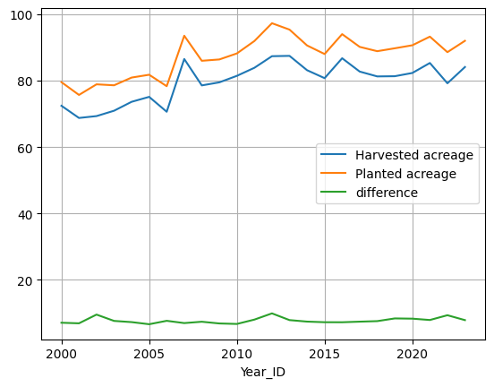
# recreating graph in 12.2 Forecasting Yield
df_supply.plot(x='Year_ID', y=['Yield per harvested acre'], grid=True);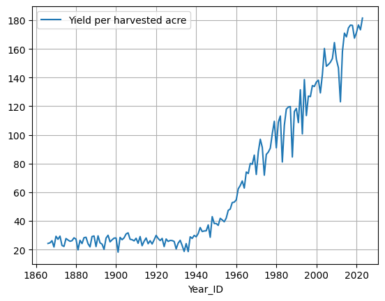
# recreating graph in 12.2 Forecasting Yield
df_supply.query('Year_ID > 1950').plot(x='Year_ID', y=['Yield per harvested acre'], grid=True);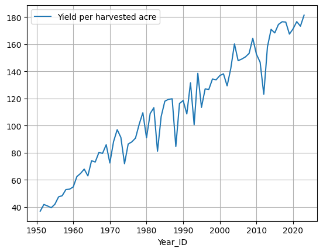
# recreating graph in 12.2 Forecasting Yield
df_supply.query('Year_ID > 1980').plot(x='Year_ID', y=['Yield per harvested acre'], grid=True);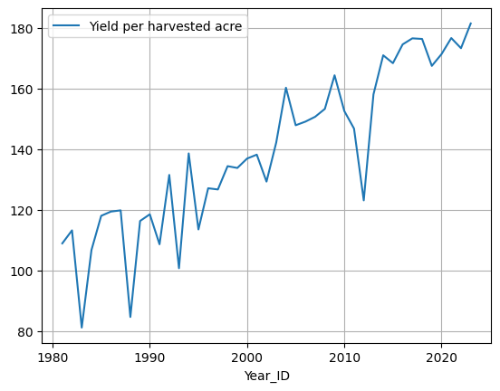
20.4 Consumption
Let’s now switch our attention to the demand side. We begin by grabbing all the demand related attributes.
attributes = ['Food, alcohol, and industrial use', 'Feed and residual use', 'Seed use', 'Exports, market year']
df_demand_tidy = \
(
df_feed_grains
.query('SC_Commodity_Desc == "Corn"')
.query('SC_GeographyIndented_Desc == "United States"')
.query('SC_Attribute_Desc == @attributes')
.query('Timeperiod_Desc.str.contains("MY")')
[['SC_Commodity_Desc', 'SC_GeographyIndented_Desc', 'SC_Attribute_Desc', 'Timeperiod_Desc','Year_ID', 'Amount', 'SC_Unit_Desc']]
)
df_demand_tidy| SC_Commodity_Desc | SC_GeographyIndented_Desc | SC_Attribute_Desc | Timeperiod_Desc | Year_ID | Amount | SC_Unit_Desc | |
|---|---|---|---|---|---|---|---|
| 16525 | Corn | United States | Exports, market year | MY Sep-Aug | 1975 | 1664.494 | Million bushels |
| 16530 | Corn | United States | Exports, market year | MY Sep-Aug | 1976 | 1645.119 | Million bushels |
| 16535 | Corn | United States | Exports, market year | MY Sep-Aug | 1977 | 1896.396 | Million bushels |
| 16540 | Corn | United States | Exports, market year | MY Sep-Aug | 1978 | 2113.117 | Million bushels |
| 16633 | Corn | United States | Exports, market year | MY Sep-Aug | 1979 | 2401.517 | Million bushels |
| ... | ... | ... | ... | ... | ... | ... | ... |
| 18601 | Corn | United States | Food, alcohol, and industrial use | MY Sep-Aug | 2019 | 6256.213 | Million bushels |
| 18606 | Corn | United States | Food, alcohol, and industrial use | MY Sep-Aug | 2020 | 6435.942 | Million bushels |
| 18611 | Corn | United States | Food, alcohol, and industrial use | MY Sep-Aug | 2021 | 6734.439 | Million bushels |
| 18614 | Corn | United States | Food, alcohol, and industrial use | MY Sep-Aug | 2022 | 6649.000 | Million bushels |
| 18615 | Corn | United States | Food, alcohol, and industrial use | MY Sep-Aug | 2023 | 6704.000 | Million bushels |
196 rows × 7 columns
Now let’s pivot our tidy data to make it a bit more usable.
df_demand = \
(
df_demand_tidy
.pivot(index='Year_ID', columns='SC_Attribute_Desc', values='Amount')
.reset_index()
[['Year_ID', 'Food, alcohol, and industrial use', 'Feed and residual use', 'Seed use', 'Exports, market year']]
.assign(total_demand = lambda df: df['Food, alcohol, and industrial use'] + df['Feed and residual use'] +
df['Seed use'] + df['Exports, market year'])
)
df_demand.head()| SC_Attribute_Desc | Year_ID | Food, alcohol, and industrial use | Feed and residual use | Seed use | Exports, market year | total_demand |
|---|---|---|---|---|---|---|
| 0 | 1975 | 500.7 | 3581.760 | 20.1 | 1664.494 | 5767.054 |
| 1 | 1976 | 522.1 | 3601.881 | 20.1 | 1645.119 | 5789.200 |
| 2 | 1977 | 561.5 | 3729.743 | 19.5 | 1896.396 | 6207.139 |
| 3 | 1978 | 588.5 | 4274.362 | 19.5 | 2113.117 | 6995.479 |
| 4 | 1979 | 619.5 | 4563.043 | 20.0 | 2401.517 | 7604.060 |
# 13.1 Food, alcohol, and industrial use
df_demand.plot(x='Year_ID', y='Food, alcohol, and industrial use', grid=True);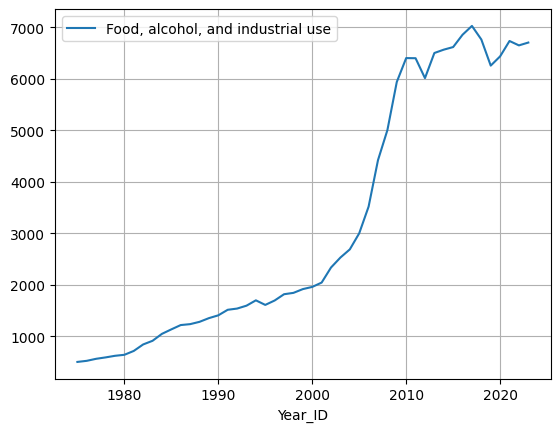
# 13.1 Food, alcohol, and industrial use as proportion of total demand
(
df_demand.
assign(prop = lambda df: df['Food, alcohol, and industrial use'] / df['total_demand'])
).plot(x='Year_ID', y='prop', grid=True);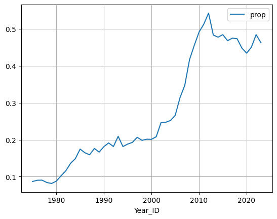
# 13.2 Exports
df_demand.plot(x='Year_ID', y='Exports, market year', grid=True);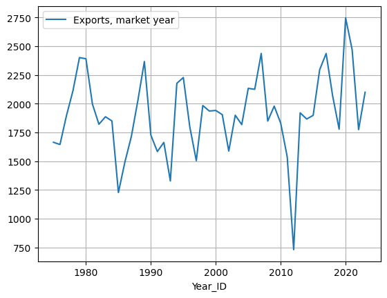
# 13.2 Exports as a proportion of total demand
(
df_demand.
assign(prop = lambda df: df['Exports, market year'] / df['total_demand'])
).plot(x='Year_ID', y='prop', grid=True);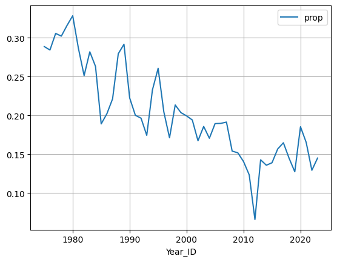
# 13.3 Feed and residuals
df_demand.plot(x='Year_ID', y='Feed and residual use', grid=True);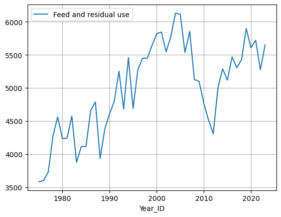
# 13.3 Feed and residuals as a proportion of total demand
(
df_demand.
assign(prop = lambda df: df['Feed and residual use'] / df['total_demand'])
).plot(x='Year_ID', y='prop', grid=True);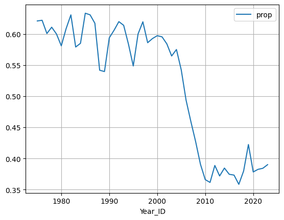
20.5 Ending Stocks and Price
Let’s now analyze the relationship between price and ending stocks. This is done in Chapter 15 (Ending Stocks and Price).
We begin by examining a scatter plot of stocks-to-use vs prices received by farmers. I would guess there would be a negative relationship here and that is the case.
# corn stocks-to-use and prices received by farmers
df_surplus = \
(
df_supply[['Year_ID', 'total_supply', 'Prices received by farmers']]
.merge(df_demand[['Year_ID', 'total_demand']], how='inner')
.assign(stocks_ratio = lambda df: (df['total_supply'] - df['total_demand']) / df['total_demand'])
)
df_surplus.plot(x='stocks_ratio', y='Prices received by farmers', kind='scatter', grid=True);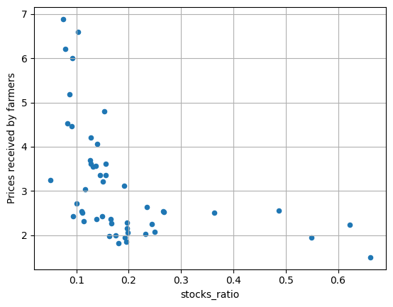
Let’s run a regression on this data set.
from sklearn.linear_model import LinearRegression
df_X = df_surplus.dropna()[['stocks_ratio']]
df_y = df_surplus.dropna()[['Prices received by farmers']]
model = LinearRegression()
model.fit(df_X, df_y)LinearRegression()In a Jupyter environment, please rerun this cell to show the HTML representation or trust the notebook.
On GitHub, the HTML representation is unable to render, please try loading this page with nbviewer.org.
LinearRegression()
As we see we get an \(R^2\) of 0.22 which isn’t bad in the world of finance.
model.score(df_X, df_y)0.22025208089867765For every percent increase in stocks-to-use ratio there is about a $0.05 reduction in the price received by farmers.
model.coef_ / 100array([[-0.04628747]])20.5.1 Analyzing Pre-2006
Mallory suggests breaking down the analysis into pre-2006 and post-2006 because that’s when the ethanol mandates came into play.
We begin with pre-2006.
df_surplus_pre_2006 = df_surplus.query('Year_ID < 2006')
df_surplus_pre_2006.plot(x='stocks_ratio', y='Prices received by farmers', kind='scatter', grid=True);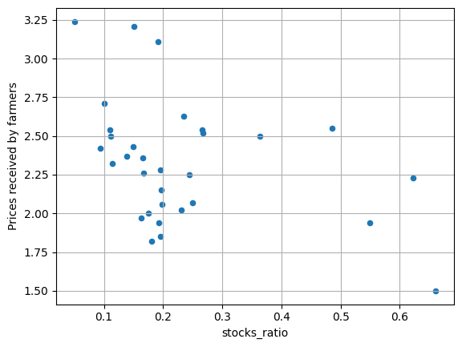
Let’s fit a regression to the pre-2006 data.
from sklearn.linear_model import LinearRegression
df_X = df_surplus_pre_2006.dropna()[['stocks_ratio']]
df_y = df_surplus_pre_2006.dropna()[['Prices received by farmers']]
model = LinearRegression()
model.fit(df_X, df_y)LinearRegression()In a Jupyter environment, please rerun this cell to show the HTML representation or trust the notebook.
On GitHub, the HTML representation is unable to render, please try loading this page with nbviewer.org.
LinearRegression()
It doesn’t seem to help our \(R^2\), but it does significantly change our coefficient, which is good to know.
model.score(df_X, df_y)0.1505653587487924model.coef_ / 100array([[-0.01018139]])20.5.2 Analyzing post-2006
Now let’s do the post-2006 analysis.
df_surplus_post_2006 = df_surplus.query('Year_ID >= 2006')
df_surplus_post_2006.plot(x='stocks_ratio', y='Prices received by farmers', kind='scatter', grid=True);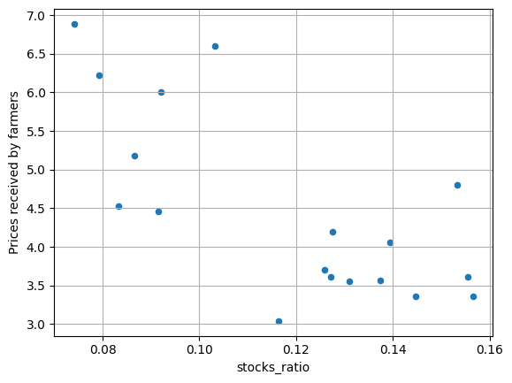
Let’s now fit a regression to the post-2006 data.
from sklearn.linear_model import LinearRegression
df_X = df_surplus_post_2006.dropna()[['stocks_ratio']]
df_y = df_surplus_post_2006.dropna()[['Prices received by farmers']]
model = LinearRegression()
model.fit(df_X, df_y)LinearRegression()In a Jupyter environment, please rerun this cell to show the HTML representation or trust the notebook.
On GitHub, the HTML representation is unable to render, please try loading this page with nbviewer.org.
LinearRegression()
Our \(R^2\) improves and the negative relationship is much more pronounced.
model.score(df_X, df_y)0.5193873474299935model.coef_ / 100array([[-0.31178772]])